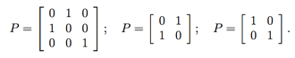
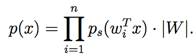
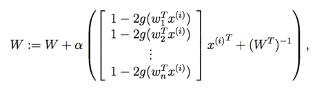
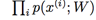

CS229
Lecture notes
翻译：CycleUser
Part XII
独立成分分析（Independent Components Analysis ）
接下来我们要讲的主体是独立成分分析（Independent Components Analysis，缩写为 ICA）。这个方法和主成分分析（PCA）类似，也是要找到一组新的基向量（basis）来表征（represent）样本数据。然而，这两个方法的目的是非常不同的。
还是先用“鸡尾酒会问题（cocktail
party problem）”为例。在一个聚会场合中，有 n 个人同时说话，而屋子里的任意一个话筒录制到底都只是叠加在一起的这 n 个人的声音。但如果假设我们也有 n 个不同的话筒安装在屋子里，并且这些话筒与每个说话人的距离都各自不同，那么录下来的也就是不同的组合形式的所有人的声音叠加。使用这样布置的 n 个话筒来录音，能不能区分开原始的 n 个说话者每个人的声音信号呢？
把这个问题用方程的形式来表示，我们需要先假设有某个样本数据 s ∈ Rn，这个数据是由 n 个独立的来源（independent
sources）生成的。我们观察到的则为：
x = As,
上面式子中的 A 是一个未知的正方形矩阵（square matrix），叫做混合矩阵（mixing matrix）。通过重复的观察，我们就得到了训练集 {x(i) ; i = 1, . . . , m}，然后我们的目的是恢复出生成这些样本 x(i) = As(i) 的原始声音源 s(i) 。
在咱们的“鸡尾酒会问题”中，s(i) 就是一个 n 维度向量，而 s j (i) 是第 j 个说话者在第 i 次录音时候发出的声音。x(i) 同样也是一个 n 维度向量，而 x j (i)是第 j 个话筒在第 i 次录制到的声音。
设混合矩阵 A
的逆矩阵 W = A−1是混合的逆向过程，称之为还原矩阵（unmixing matrix）。那么咱们的目标就是找出这个 W，这样针对给定的话筒录音 x(i)，我们就可以通过计算 s(i) = Wx(i) 来还原出来声音源。为了方便起见，我们就用 wiT 来表示 W 的第 i 行，这样就有：

这样就有 wi ∈ Rn，通过计算 s(i) = w jT x ( i ) 就可以恢复出第 j 个声源了。
1 独立成分分析（ICA）的模糊性（ambiguities）
W = A−1 能恢复到怎样的程度呢？如果我们对声源和混合矩阵都有预先的了解（prior knowledge），那就不难看出，混合矩阵 A 当中存在的某些固有的模糊性，仅仅给定了 x(i) 可能无法恢复出来。
例如，设 p 是一个 n×n 的置换矩阵（permutation matrix）。这就意味着矩阵 P 的每一行和每一列都只有一个 1。下面就是几个置换矩阵的样例：

如果 z 是一个向量，那么 Pz 就是另外一个向量，这个向量包含了 z 坐标的置换版本（permuted version）。如果只给出 x(i)，是没有办法区分出 w 和 Pw 的。具体来说，原始声源的排列（permutation）是模糊的（ambiguous），这一点也不奇怪。好在大多数情况下，这个问题都并不重要。
进一步来说，就是没有什么办法能恢复出 wi 的正确的缩放规模。例如，如果把 A 替换成了 2A，那么每个 s(i) 都替换成了 (0.5)s(i)，那么观测到的 x(i) = 2A · (0.5)s(i) 还是跟原来一样的。再进一步说，如果 A 当中的某一列，都用一个参数 α 来进行缩放，那么对应的音源就被缩放到了 1/α，这也表明，仅仅给出 x(i)，是没办法判断这种情况是否发生的。因此，我们并不能还原出音源的“正确”缩放规模。然而，在我们应用的场景中，例如本文提到的这个“鸡尾酒会问题”中，这种不确定性并没有关系。具体来说，对于一个说话者的声音信号 s(i) 的缩放参数 α 只影响说话者声音的大小而已。另外，符号变换也没有影响，因为sj (i) 和 −sj (i) 都表示了扬声器中同样的声音大小。所以，如果算法找到的 wi 被乘以任意一个非零数进行了缩放，那么对应的恢复出来的音源 si = wiT x 也进行了同样的缩放；这通常都不要紧。（这些考量也适用于课堂上讨论的对 Brain/MEG 数据使用的 ICA 算法。）
上面这些是 ICA 算法模糊性的唯一来源么？还真是这样，只要声源 si 是非高斯分布（non-Gaussian）的即可。如果是高斯分布的数据（Gaussian data），例如一个样本中，n = 2, 而 s ∼ N(0,I) 。（译者注：即 s 是一个以 0 和 I 为参数的正态分布，正态分布属于高斯分布。）其中的 I 是一个 2×2 的单位矩阵（identity matrix）。要注意，这是一个标准正态分布，其密度（density）轮廓图（contour）是以圆点为中心的圆，其密度是旋转对称的（rotationally symmetric）。
接下来，假如我们观测到了某个 x
= As，其中的 A 就是混合矩阵（mixing matrix）。这样得到的 x 也是一个高斯分布的，均值为 0，协方差 E[xxT ] = E[AssT AT ] = AAT。 然后设 R 为任意的正交矩阵（不太正式地说，也可以说成是旋转（rotation）矩阵或者是反射（reflection）矩阵），这样则有 RRT = RTR = I，然后设 A′ = AR。如果使用 A′ 而不是 A 作为混合矩阵，那么观测到的数据就应该是 x′ = A′s。这个 x′ 也还是个高斯分布，依然是均值为 0，协方差为 E[x′(x′)T ] = E[A′ssT (A′)T ] = E[ARssT (AR)T ] = ARRT AT = AAT。看到没，无论混合矩阵使用 A 还是 A′ ，得到的数据都是一个正态分布 N (0, AAT )，以 0 为均值，协方差为 AAT。这样就根本不能区分出来混合矩阵使用的是 A 还是 A′。所以，只要混合矩阵中有一个任意的旋转分量（arbitrary rotational component），并且不能从数据中获得，那么就不能恢复出原始数据源了。
上面这些论证，是基于多元标准正态分布（multivariate standard normal distribution）是旋转对称（rotationally symmetric）的这个定理。这些情况使得 ICA 面对高斯分布的数据（Gaussian data）的时候很无力，但是只要数据不是高斯分布的，然后再有充足的数据，那就还是能恢复出 n 个独立的声源的。
2 密度（Densities）和线性变换（linear transformations）
在继续去推导 ICA 算法之前，我们先来简要讲一讲对密度函数进行线性变换的效果（effect）。
加入我们有某个随机变量 s，可以根据某个密度函数 ps(s) 来绘制。简单起见，咱们现在就把 s 当做是一个实数，即 s ∈ R。然后设 x 为某个随机变量，定义方式为 x = As (其中 x ∈ R, A ∈ R)。然后设 px 是 x 的密度函数。那么这个 px 是多少呢？
设 W
= A−1。要计算 x 取某一个特定值的“概率（probability）”，可以先计算对于 s = Wx，在这一点上的 ps，然后推导出“px(x) = ps(Wx)”。然而，这是错误的。例如，假设 s ∼ Uniform[0, 1]，即其密度函数 ps(s) = 1{0 ≤ s ≤ 1}。然后设 A = 2，这样 x = 2s。很明显， x 在 [0,2] 这个区间均匀分布（distributed uniformly）。所以其密度函数也就是 px(x) = (0.5)1{0 ≤ x ≤ 2}。这并不等于 ps (W x)，其中的 W = 0.5 = A−1。所以正确的推导公式应该是 px(x) = ps(W x)|W |。
推广一下，若 s 是一个向量值的分布，密度函数为 ps，而 x = As，其中的 A 是一个可逆的正方形矩阵，那么 x 的密度函数则为：
px(x) = ps(Wx) · |W|,
上式中 W
= A−1.
Remark. If you’ve seen the result that A maps [0, 1]n to a
set of volume |A|,
then here’s another way to remember the formula for px given above, that
also generalizes our previous 1-dimensional example.
备注。可能你已经看到了用 A 映射 [0, 1]n 得到的就是一个由 volume |A| 组成的集合（译者注：这里的 volume 我不确定该怎么翻译），然后就又有了一个办法可以记住上面给出的关于 px的公式了，这也是对之前讨论过的 1 维样例的一个泛化扩展。具体来说，设给定了 A ∈ Rn×n，然后还按照惯例设 W
= A−1。接着设 C1 = [0, 1]n 是一个 n 维度超立方体，然后设 C2 ={As:s∈C1}⊆Rn 为由 A 给定的映射下的 C1 的投影图像。这就是线性代数里面，用 |A| 来表示 C2 的体积的标准结果，另外也是定义行列式（determinants）的一种方式。接下来，设 s在 [0, 1]n 上均匀分布（uniformly
distributed），这样其密度函数为 ps(s) = 1{s ∈ C1}。然后很明显，x 也是在 C2 内均匀分布（uniformly distributed）。因此可以知道其密度函数为 px(x) = 1{x ∈ C2}/vol(C2)，必须在整个 C2 累积为1（integrate to 1，这是概率的性质）。但利用逆矩阵的行列式等于行列式的倒数这个定理，就有了 1/vol(C2) = 1/|A| = |A−1| = |W|。所以则有 px(x) = 1{x ∈ C2}|W| = 1{Wx ∈ C1}|W | = ps(W x)|W |。
3 独立成分分析算法（ICA algorithm）
现在就可以推导 ICA 算法了。我们这里描述的算法来自于 Bell 和 Sejnowski，然后我们对算法的解释也是基于他们的算法，作为一种最大似然估计（maximum likelihood estimation）的方法。（这和他们最初的解释不一样，那个解释里面要涉及到一个叫做最大信息原则（infomax principal） 的复杂概念，考虑到对 ICA 的现代理解，推导过程已经不需要那么复杂了。）
我们假设每个声源的分布 si 都是通过密度函数 ps 给出，然后联合分布 s 则为：

这里要注意，通过在建模中将联合分布（joint distribution）拆解为边界分布（marginal）的乘积（product），就能得出每个声源都是独立的假设（assumption）。利用上一节推导的共识，这就表明对 x = As = W−1s 的密度函数为：

剩下的就只需要去确定每个独立的声源的密度函数 ps 了。回忆一下，给定某个实数值的随机变量 z，其累积分布函数（cumulative
distribution function，cdf）F 的定义为：

然后，对这个累积分布函数求导数，就能得到 z 的密度函数：pz(z) = F′(z)。
因此，要确定 si 的密度函数，首先要做的就是确定其累积分布函数（cdf）。这个 cdf 函数必然是一个从 0 到 1 的单调递增函数。根据我们之前的讨论，这里不能选用高斯分布的 cdf，因为 ICA 不适用于高斯分布的数据。所以这里我们选择一个能够保证从 0 增长到 1 的合理的“默认（default）” 函数就可以了，比如 s 形函数（sigmoid function） g(s) = 1/(1 + e−s)。这样就有，ps(s) = g′(s)。1
W 是一个正方形矩阵，是模型中的参数。给定一个训练集合 {x(i);i = 1,...,m}，然后对数似然函数（log likelihood）则为：

我们要做的就是上面这个函数找出关于 W 的最大值。通过求导，然后利用前面讲义中给出的定理 ∇W|W| = |W|(W−1)T，就可以很容易推导出随机梯度上升（stochastic gradient ascent）学习规则（learning rule）。对于一个给定的训练样本 x(i)，这个更新规则为：

上式中的 α 是学习速率（learning rate）。在算法收敛（converges）之后，就能计算出 s(i) = Wx(i)，这样就能恢复出原始的音源了。
备注。在写下数据的似然函数的时候，我们隐含地假设了这些 x(i) 都是彼此独立的（这里指的是对于不同的 i 值来说彼此独立；注意这个问题并不是说 x(i) 的不同坐标是独立的），这样对训练集的似然函数则为。很显然，对于语音数据和其他 x(i) 有相关性的时间序列数据来说，这个假设是不对的，但是这可以用来表明，只要有充足的数据，那么有相关性的训练样本并不会影响算法的性能。但是，对于成功训练的样本具有相关性的问题，如果我们把训练样本当做一个随机序列来进行访问，使用随机梯度上升（stochastic gradient ascent）的时候，有时候也能帮助加速收敛。（也就是说，在训练集的一个随机打乱的副本中运行随机梯度上升。）
1如果你对声源的密度函数的形式有了事先的了解，那么在这个位置替换过来就是个很好的办法。不过如果没有这种了解，就可以用 s 形函数（sigmoid function），可以把这个函数当做是一个比较合理的默认函数，在很多问题中，这个函数用起来效果都不错。另外这里讲述的是假设要么所有的数据 x(i) 已经被证明均值为 0，或者可以自然预期具有 0 均值，比如声音信号就是如此。这很有必要，因为我们的假设 ps(s) = g′(s) 就意味着期望 E[s] = 0（这个逻辑函数（logistic function）的导数是一个对称函数，因此给出的就是均值为 0 的随机变量对应的密度函数），这也意味着 E[x] = E[As] = 0。